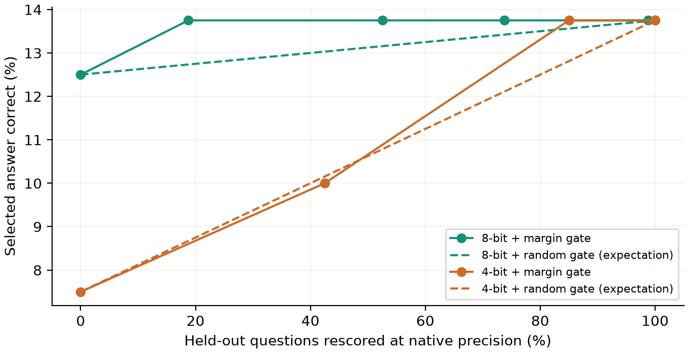
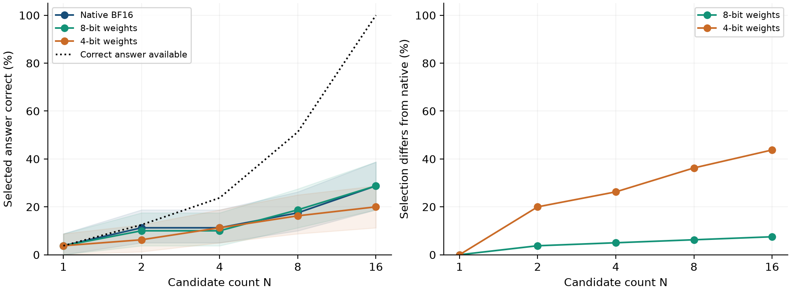

WORKING PAPER v0.1 | 19 September 2026 | Not peer reviewed
Weight Precision and Answer Selection: A Local Pilot with Small Language-Model Judges
Tanay Anand
Independent project | tanayanand.me
Abstract
Weight quantization reduces parameter storage, but its effect on answer selection need not be summarized by candidate-level classification accuracy. We report a controlled local pilot using Qwen2.5-0.5B-Instruct as a prompted arithmetic judge at native BF16, 8-bit and 4-bit weight precision. The experiment evaluates 120 constructed questions, with 40 used for threshold development and 80 held out; each contains 16 distinct integer answers with exactly one correct answer. At N=16, selected-answer accuracy is 13.8% at native precision, 12.5% at 8 bits, and 7.5% at 4 bits. The 4-bit versus native paired difference is -6.2 percentage points, with a 95% question-bootstrap interval of [-15.0, 1.2]. We additionally evaluate development-calibrated selective rescoring. Native 0.5B batching changes N=16 selections on 28.7% of test questions, revealing substantial implementation sensitivity. A subsequent 1.5B same-family extension on the same questions yields N=16 accuracies of 28.7% (native), 28.7% (8-bit), and 20.0% (4-bit). This study reports actual quantized-model inference over artificial answer pools, not generated reasoning traces. It establishes neither a general scaling law nor a novel state-of-the-art method.
1. Research question and scope
For a fixed candidate pool, how do weight precision and pool size change a judge's selected answer? Can a simple score-gap rule selectively invoke the native model to recover its choices? These questions separate three quantities: numerical agreement, answer correctness, and computation cost. None implies either of the others.
This pilot was designed for an Apple M1 laptop with 8 GB of unified memory. Its contribution is an auditable experiment and a reproducible baseline, not a claim of first-ever discovery. The stronger original hypothesis - that generating more answers becomes counterproductive because of judge compression - requires model-generated pools and larger trained verifiers, which are outside the present evidence.
2. Relationship to existing work
Verifier-based selection over math solutions predates this study [1]. Reward-model overoptimization already establishes that stronger optimization of a proxy can hurt the underlying objective [2]. Generative verifiers [3] and recent verification-dynamics experiments [4] motivate evaluating the judge as a separate component. Quasar quantizes the verifier in speculative token decoding [5]; its verification target differs from completed-answer correctness here. These precedents rule out claiming that verifier selection, harmful overoptimization, or quantized verification are themselves new.
3. Experimental design
The plan in protocol.md was written before model scoring. The exact checkpoint is Qwen/Qwen2.5-0.5B-Instruct [6], revision 7ae557604adf67be50417f59c2c2f167def9a775. Native parameters use BF16. MLX-LM 0.30.2 and MLX 0.29.3 [8] perform affine groupwise weight quantization at 8 or 4 bits with group size 64. Quantizable embeddings and linear layers are included; normalization parameters remain at native precision. The model is not fine-tuned. This is real parameter quantization, not rounding the final scores.
Dataset seed 20260919 generates 30 questions for each of four templates: a+b, a*b, (a+b)*c, and a*b-c, with operands from 3 through 39. Repeated question strings are rejected. Every third question within each template enters the development split, yielding 40 development and 80 test questions. Each pool contains the exact integer answer and 15 unique nonzero offsets sampled without replacement from -30 through 30, then shuffled once. Candidate pools are fixed across precisions. Prefixes of lengths 1, 2, 4, 8 and 16 form the selection tasks.
Important construction effect. At N=16 every question has exactly one correct candidate; smaller prefixes may contain none. Thus oracle coverage grows by construction. These pools are not independent draws from a generator, and the experiment cannot infer whether more LLM generation helps or hurts in deployment. Incorrect answers are simple numerical distractors, not naturally occurring reasoning failures.
3.1 Scoring and deterministic selection
System prompt: "You are an arithmetic verifier. Answer only Yes or No." The user prompt contains the question, a proposed integer answer, and "Is the proposed answer correct?" We apply the official chat template and score the first assistant token as logit(Yes) - logit(No). Token IDs are 9454 and 2753. Both labels are single tokens. This is equivalent to the log odds after restricting the distribution to those labels; it is not a calibrated probability of correctness.
Right-padded batches contain four candidates. Causal attention prevents future padding from influencing real tokens. The final real-token hidden state is gathered before applying the output head. Logits are converted to float32 before subtraction, but this does not undo earlier BF16 rounding. Selection uses the largest score, with ties broken by first position in the pre-shuffled pool. No reasoning tokens are generated.
3.2 Estimands and uncertainty
The unit of evaluation is a held-out question. Correctness comes from integer arithmetic, never from the native model. We report selected-answer accuracy, selection disagreement, beneficial and harmful correctness flips, and answer availability. All intervals use 10,000 paired question-level percentile bootstrap resamples (seed 82519). Candidate-level samples and nested N values are not treated as independent observations. Intervals are descriptive, pointwise and unadjusted for multiple comparisons.
Native, 8-bit and 4-bit runs each score 1,920 candidates (102,576 input tokens). Wall times include the scoring loop after warmup; model loading and quantization are recorded separately. Parameter bytes count model arrays, not process peak memory. Conditions run separately on a shared laptop, so the timing observations do not support deployment-speedup claims.
4. Held-out selection results

Figure 1. Left: selected-answer accuracy with pointwise 95% question-bootstrap bands; the dotted curve is answer availability. Right: disagreement with the native model. Constructed pools; 80 held-out questions.
| N | Available (%) | Native (%) | 8-bit (%) | 4-bit (%) | 4-bit - native (pp), 95% CI |
|---|---|---|---|---|---|
| 1 | 3.8 | 3.8 | 3.8 | 3.8 | 0.0 [0.0, 0.0] |
| 2 | 12.5 | 5.0 | 3.8 | 2.5 | -2.5 [-6.2, 0.0] |
| 4 | 23.8 | 6.2 | 5.0 | 3.8 | -2.5 [-7.5, 2.5] |
| 8 | 51.2 | 11.2 | 8.8 | 6.2 | -5.0 [-12.5, 1.2] |
| 16 | 100.0 | 13.8 | 12.5 | 7.5 | -6.2 [-15.0, 1.2] |
At N=16, the 8-bit model changes the selected candidate on 28.7% of held-out questions, while 4-bit changes it on 68.8%. There are 2 harmful and 1 beneficial correctness flips for 8-bit, and 8 harmful and 3 beneficial flips for 4-bit. A changed choice can leave correctness unchanged when both answers are wrong.
The native top score is tied on 18.8% of N=16 test pools; the 8-bit and 4-bit rates are 18.8% and 42.5%. The fixed tie-breaking rule is therefore part of the experiment. Quantization need not preserve score scale or break ties in the same way.
These results should not be described as proof that quantization universally harms reasoning or that more candidates cause accuracy collapse. The native judge is fallible, the sample is small, and the candidate construction changes answer availability with N. The full table is retained regardless of whether it supports the motivating hypothesis.
4.1 Candidate classification is an insufficient summary
For comparison, thresholding the score at zero gives candidate-level Yes/No accuracy of 29.7% (native), 42.4% (8), 6.8% (4). However, an always-No classifier obtains 93.75% because 15 of 16 candidates are incorrect. This severe class imbalance makes raw binary accuracy an unsuitable standalone quality measure. Selecting the correct answer is the primary outcome.
5. Selective native rescoring
For each N and quantized precision, compute the gap between its highest and second-highest candidate scores. If that gap is at or below a threshold, replace the quantized selection with the native selection after rescoring all N candidates. Thresholds are the 0th, 25th, 50th, 75th and 100th percentiles of development gaps, plus never and always rescore. Test labels are not used to choose thresholds. The development-median policy is the prespecified primary policy; all thresholds are included in analysis.json.

Figure 2. N=16 held-out accuracy across all development-calibrated gates. Dashed curves show the expected accuracy of random rescoring at the same test escalation fraction. These are cached-score policy evaluations, not measured online hybrid execution.
| Initial judge | Escalated (%) | Hybrid accuracy (%) | Vs. quantized (pp), 95% CI | Random gate expectation (%) |
|---|---|---|---|---|
| 8-bit | 73.8 | 13.8 | 1.2 [-2.5, 6.2] | 13.4 |
| 4-bit | 85.0 | 13.8 | 6.2 [-1.2, 15.0] | 12.8 |
Random rescoring is compared analytically: at escalation fraction f, its expected per-question correctness is (1-f) times quantized correctness plus f times native correctness. This avoids selecting a favorable random seed. The comparison controls rescoring counts at a fixed N, not exact token-dependent latency. Its paired uncertainty, conditional on the observed escalation fraction, is included in the raw analysis.
The selective policy is a baseline, not an established improvement. Rescoring can remove beneficial quantization changes as well as harmful ones. Agreement with the native model measures numerical fidelity; it does not establish mathematical correctness. A deployed system would also need model residency or loading, scheduling, and end-to-end timing measurements. No energy or production speedup is claimed.
6. A standard stability observation
Let s_i be the native score of candidate i and q_i its quantized score. Suppose every candidate satisfies |q_i - s_i| <= epsilon. If the native winner a has margin m = s_a - max_{j != a} s_j greater than 2 epsilon, the quantized winner is also a.
Proof. For any competitor j, q_a - q_j >= (s_a - epsilon) - (s_j + epsilon) >= m - 2 epsilon > 0. Hence every competitor has a strictly smaller quantized score. Strict inequality excludes ties. This elementary perturbation argument is included for interpretation, not asserted as a novel theorem.
The condition needs a bound on score errors, not just the number of weight bits. It cannot be used as a free inference-time certificate without estimating or certifying those errors. In the present data, epsilon is computed after both precision passes and is only an ex-post diagnostic. The implementation asserts that no pool satisfying the condition has a different winner.
| N | 8-bit certified pools (%) | 4-bit certified pools (%) |
|---|---|---|
| 2 | 43.8 | 0.0 |
| 4 | 21.2 | 0.0 |
| 8 | 5.0 | 0.0 |
| 16 | 1.2 | 0.0 |
6.1 Numerical control added after the primary protocol
Initial warmup comparisons between batches and standalone examples differed by up to 0.250 score units at native precision. We therefore added a post-protocol control that rescored all 1,280 held-out candidates with the native model in singleton batches. The largest score change was 0.375. This is a computational robustness check on the same questions, not an independent replication.
| N | Native batch-1 accuracy (%) | Batch-1 vs. batch-4 selection disagreement (%) |
|---|---|---|
| 1 | 3.8 | 0.0 |
| 2 | 3.8 | 8.8 |
| 4 | 5.0 | 11.2 |
| 8 | 8.8 | 21.2 |
| 16 | 11.2 | 28.7 |
At N=16, the native batch-size control changes 28.7% of selections, compared with 28.7% for 8-bit quantization in the primary comparison. Numerical implementation effects are therefore material in this setup.
Batching changes floating-point reduction paths and may affect near ties. The primary precision comparisons keep the input pools, prompts and batch size fixed, but they still combine weight approximation with precision-specific kernel arithmetic. Results are therefore specific to the measured implementation, and singleton-batch results do not replace the primary results after the fact.
6.2 Exploratory extension to a 1.5B judge
After observing the low native accuracy of the 0.5B pilot, we extended the identical scoring protocol to Qwen2.5-1.5B-Instruct [7]. This is an exploratory same-family model-size extension, not an independent confirmation: it reuses the same development and test questions, prompt, candidate ordering and analysis. Both models and all precision settings are reported. No prompts or thresholds were tuned on the larger model test results.
Exact 1.5B checkpoint revision: 989aa7980e4cf806f80c7fef2b1adb7bc71aa306. The extension protocol and complete scores are in replication-1.5b/. It uses native BF16, MLX 8-bit and MLX 4-bit weights, with the same group size and batch size. An initial native attempt stopped making logged progress after 640 candidates and was terminated without a completed result. All extension runs use a 128 MiB MLX temporary-buffer cache limit; the execution amendment and aborted log are retained.
| N | Native (%) | 8-bit (%) | 4-bit (%) | 4-bit - native (pp), 95% CI |
|---|---|---|---|---|
| 1 | 3.8 | 3.8 | 3.8 | 0.0 [0.0, 0.0] |
| 2 | 11.2 | 10.0 | 6.2 | -5.0 [-10.0, -1.2] |
| 4 | 11.2 | 10.0 | 11.2 | 0.0 [-5.0, 5.0] |
| 8 | 17.5 | 18.8 | 16.2 | -1.2 [-7.5, 5.0] |
| 16 | 28.7 | 28.7 | 20.0 | -8.8 [-17.5, 0.0] |

Figure 3. Same-family 1.5B extension, on the same 80 held-out questions. Candidate construction and numerical backend limits remain unchanged.
At N=16, 8-bit selection disagreement is 7.5%, with 0 harmful and 0 beneficial correctness flips. At 4 bits, disagreement is 43.8%, with 10 harmful and 3 beneficial flips. These counts separate changes in choice from changes in answer correctness. Equal observed accuracies do not establish equivalence; bootstrap intervals can have zero width when every observed paired correctness difference is zero.
The 1.5B 4-bit development-median gate rescores 55.0% of test pools and reaches 21.2% accuracy; its paired change versus 4-bit alone is 1.2 pp, 95% interval [-5.0, 7.5]. All other policy thresholds and the random-gate comparisons are retained in the extension analysis.
7. Resource observations and reproducibility
| Condition | Parameter arrays (MiB) | Scoring (s) | Load + quantize (s) |
|---|---|---|---|
| native | 942.3 | 70.95 | 1.14 |
| 8 | 500.7 | 82.42 | 1.98 |
| 4 | 265.1 | 105.30 | 1.53 |
| 1.5B condition | Parameter arrays (MiB) | Scoring (s) | Load + quantize (s) |
|---|---|---|---|
| native | 2944.4 | 234.78 | 2.52 |
| 8 | 1564.3 | 287.58 | 3.00 |
| 4 | 828.3 | 278.92 | 3.25 |
Measurements are one pass per condition on an Apple M1 with 8 GB unified memory. They are not repeated controlled hardware benchmarks. Activation memory, allocator caches, CPU memory and checkpoint storage are excluded from the parameter-array totals. Model weights are downloaded from the original repository rather than redistributed.
The artifact includes all constructed questions, split labels, candidate scores, per-batch times, complete policy sweeps, question-level outcomes, model revision, environment package lock, source code, and hashes. Running analyze.py regenerates statistics and figures without downloading a model. run_experiment.py performs the native and quantized inference passes. The native singleton control is in check_batching.py.
Artifact and manuscript: https://tanayanand.me/research/precision-selection/
8. Limitations and next study
The primary pilot uses one 0.5B general instruction model, followed by a 1.5B same-family extension on the same questions. It covers four elementary arithmetic templates, one prompt, one candidate-order seed, one quantization backend and 80 test questions. It is neither a standardized reasoning benchmark nor an evaluation of trained reward models. Constructed offsets do not represent realistic generator errors. Bootstrap intervals omit uncertainty across model families, seeds, templates and hardware. BF16 ties and numerical kernel effects complicate attribution. The score-gap gate is heuristic and has no calibrated correctness guarantee.
A stronger follow-up should use multiple trained verifier families and independently generated reasoning traces, replicate across pool seeds, report both low-precision and native correctness under fixed generation budgets, and measure actual hybrid-system latency and memory. Prompt and numeric-kernel controls should be prespecified. The primary hypothesis and sample-size target should be registered before inspecting new test outcomes. If no reliable effect appears, that negative result should remain visible.
9. Conclusion
Weight precision can be studied separately from answer generation by scoring identical candidate pools. This artifact supplies a transparent small-model test, a margin-rescoring baseline and a numerical control. It does not establish that quantization makes additional generation counterproductive, that a new method beats existing research, or that the findings generalize. Its appropriate status is an exploratory working paper awaiting broader validation and independent review.
Authorship, assistance and publication status
Prepared for Tanay Anand with Codex assistance in research scoping, literature retrieval, implementation, local experiment execution, analysis, writing and website preparation. Independent author review and understanding are needed before academic submission. No journal or conference has accepted or reviewed this manuscript; no institutional endorsement is implied. The website release is a self-published working paper, not evidence of Google Scholar indexing.
References
[1] Karl Cobbe et al. (2021). Training Verifiers to Solve Math Word Problems. arXiv:2110.14168. https://arxiv.org/abs/2110.14168
[2] Leo Gao, John Schulman and Jacob Hilton (2022). Scaling Laws for Reward Model Overoptimization. arXiv:2210.10760. https://arxiv.org/abs/2210.10760
[3] Lunjun Zhang, Arian Hosseini, Hritik Bansal, Mehran Kazemi, Aviral Kumar and Rishabh Agarwal (2025). Generative Verifiers: Reward Modeling as Next-Token Prediction. ICLR. arXiv:2408.15240. https://arxiv.org/abs/2408.15240
[4] Yefan Zhou, Austin Xu, Yilun Zhou, Janvijay Singh, Jiang Gui and Shafiq Joty (2026). Variation in Verification: Understanding Verification Dynamics in Large Language Models. ICLR. arXiv:2509.17995. https://arxiv.org/abs/2509.17995
[5] Guang Huang and Zeyi Wen (2026). Quasar: Quantized Self-Speculative Acceleration for Rapid Inference via Memory-Efficient Verification. Preprint, arXiv:2603.01399. https://arxiv.org/abs/2603.01399
[6] Qwen team. Qwen2.5-0.5B-Instruct model card and checkpoint. Accessed 19 September 2026. https://huggingface.co/Qwen/Qwen2.5-0.5B-Instruct
[7] Qwen team. Qwen2.5-1.5B-Instruct model card and checkpoint. Exploratory extension. https://huggingface.co/Qwen/Qwen2.5-1.5B-Instruct
[8] MLX contributors. MLX-LM: language-model inference on Apple silicon. Runtime used: MLX-LM 0.30.2 / MLX 0.29.3. https://github.com/ml-explore/mlx-lm
Appendix: audit identifiers
Dataset SHA-256: 8e4aa2af3ee59dda2b5d34e2a16cbefb5af97c1a8afab3d33e41dc2f1548e7df
Protocol SHA-256: 97d16d3dd27a258f44c3539f8226668c3e4d90e597168da689c97654851c6885
Scoring script SHA-256: 0d3a7ae1daef1ec309cd01e6f9ba4c6f46d7237eda6bc8caadf899ddfeec413e
Exact package versions and source scripts are included with the downloadable research artifact. SHA-256 hashes identify the files used in the primary scoring runs. The subsequent batching control is separately labeled.